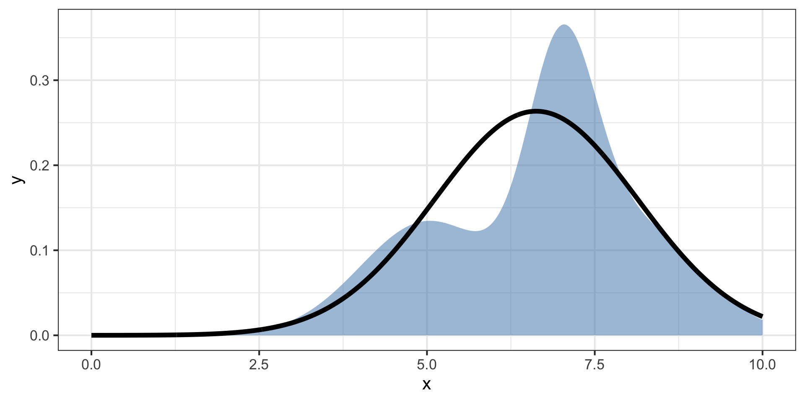
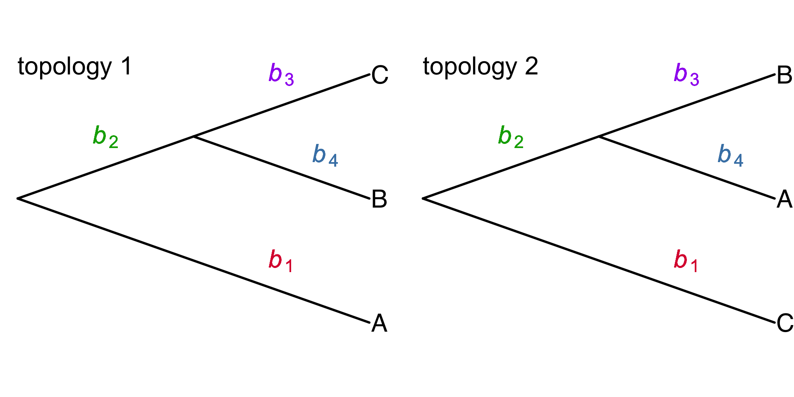

Siepel, Hassett, Staklinski — bioRxiv 2025
McCrone Lab Meeting
2025-01-08
We can use another function \(q(z)\) to approximate the posterior \(p(x,z)\).

We can use another function \(q(z)\) to approximate the posterior \(p(x,z)\).
This is variational inference (VI)
What if we could approximate the distribution of topologies and branch lengths with another distribution?
Approximate the Bayesian posterior distribution of trees given a set of observed genotypes \(\mathbf{X}\) using a variational distribution \(q(\tau, \mathbf{b}; \theta)\)
\(\tau\) – topology of a tree
\(\mathbf{b}\) – vector of branch lengths
\([\)\(b_1\), \(b_2\), \(b_3\), \(b_4\)\(]\)
\(\theta\) – free parameters of the variational distribution

Typically, \(q\) is fitted to data by adjusting \(\theta\) to minimize the KL divergence from the true posterior distribution \(p(\tau,\mathbf{b} \mid X)\)
3 essential components
VINE – Variational Inference using Node Embeddings
Observations
Neighbor joining has two steps
NJ algorithm updates the matrices \(\mathbf{Q}\) and \(\mathbf{D}\)
If we condition on \(\mathbf{Q}\) (neighbor order), then only the distance matrix \(\mathbf{D}\) will contribute to the gradient.
They rely on stochastic gradient ascent to update the topologies as points migrate.
NJ step 1: distance matrix update
After adding a new internal node, increase the size of the matrix by 1 and update distances.
Smooth, differentiable, and linear!
\(d^{(t+1)} = A^{(t)} d^{(t)}\)
NJ step 2: branch length update
I don’t want to TeX it out… but its also linear
\(b^{(t)} = C^{(t)} d^{(t)}\)